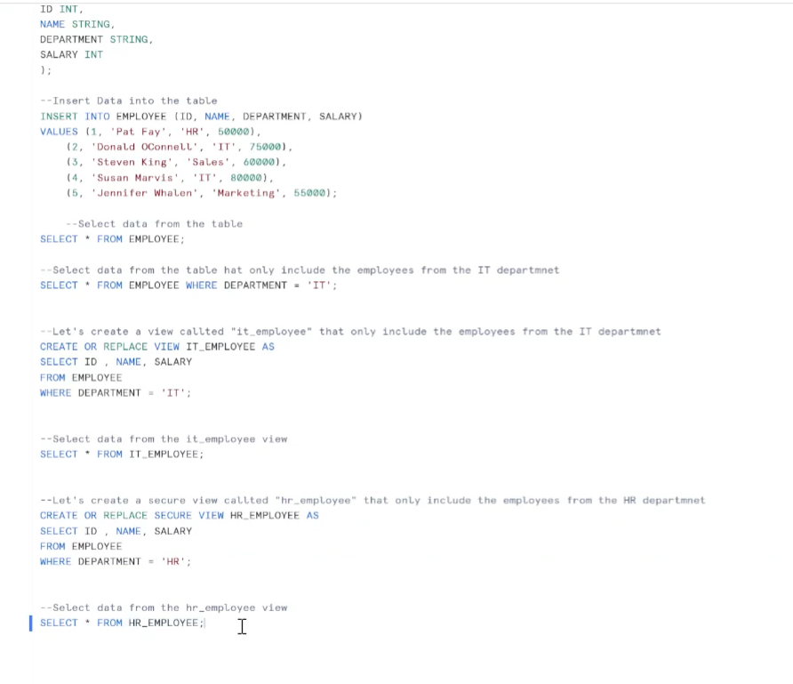

Cloud Antics
Snowflake View Types
We've built the house (Database), filled the drawers (Schemas), and bought different types of notebooks (Tables).
Now, let's talk about VIEWS.
A View is not a table. It's a "saved question" or a "window" into a table.
The 3 View Types

Standard vs. Secure vs. Materialized
How to Speak the Language (SQL)
Rob here! We have the concepts, now let's see the code.
Creating Views (The Recipe)
Top: Standard View | Bottom: Secure View
CREATE OR REPLACE VIEW IT_EMPLOYEE AS...
This creates a simple window. Anyone with access can look through it AND they can also see how you built it (the underlying SQL).
Secure View (HR Employees):
CREATE OR REPLACE SECURE VIEW HR_EMPLOYEE AS...
See that Green word? That enables "Invisible Ink Mode".
People can query
SELECT * FROM HR_EMPLOYEE and see the data (if they have permission).
BUT... if they try to look at the "Recipe" (the SQL code that says
WHERE DEPARTMENT = 'HR'), Snowflake says:
"NOPE! That's classified." 🚫
Materialized View: The "Frozen Meal"
How it cheats to be faster.
CREATE MATERIALIZED VIEW FAST_PIZZA AS...
Normal View:
Query ➡️ Go to Market ➡️ Buy Flour ➡️ Make Dough ➡️ Bake ➡️ Eat. (Slow!)
Materialized View:
Query ➡️ Open Freezer ➡️ Eat. (Fast!)
Because the result is saved on disk (pre-cooked), Snowflake doesn't even look at the original table. It just hands you the frozen pizza.
Note: Snowflake automatically "refills the freezer" (Background Refresh) whenever data changes, so you don't have to worry about it.
The "Recipe Card" 📄
This is NOT food. It's just instructions.
When you ask for "Dinner" (Query the View), the chef has to go grab ingredients and cook it from scratch right then and there.
Pros: Always fresh data.
Cons: Takes time to cook every time.
The "Secret Sauce" 🕶️
This is a Recipe Card, but with invisible ink.
You can eat the sauce, but you are forbidden from seeing the ingredients or how it was made (The underlying SQL/DDL is hidden).
Use for: Sensitive data you share with others but want to hide the logic.
"Frozen Pizza" / Meal Prep 🍕
This is a View that pretends to be a Table.
The chef cooked it yesterday and put it in the freezer. When you ask for it, BOOM! It's ready instantly. No cooking required.
Pros: Super fast.
Cons: Might be slightly stale (needs refreshing). cost money to
store.
Standard View: Use this most of the time. It's just a saved shortcut for complex SQL.
Secure View: Use this if you are giving access to an external client and don't want them to see your messy logic or filters.
Materialized View: Use this only when your query is TOO SLOW. It pre-calculates the answer (pays storage cost) to save compute time later.
1. Standard = Recipe (Cook on demand).
2. Secure = Secret Sauce (Hidden ingredients).
3. Materialized = Meal Prep (Pre-cooked for speed).
Thanks for watching Cloud Antics!